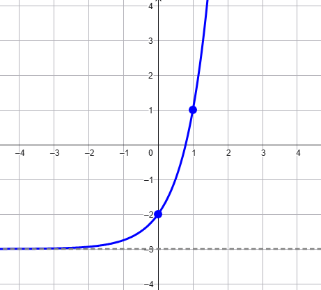

Consideriamo una funzione \(f\)
\[
y = f(x)
\]
ed un valore \(\color{red}{}a \color{black}{} \in \mathbb{R}\).
Il grafico della funzione \(g\) definita come
\[
y = f(x) +\color{red}{a}
\]
si ottiene traslando verticalmente il grafico della funzione \(f\) di \(\color{red}{}a\) unità.
La traslazione è
verso l'alto se \(\color{red}{}{}a\color{black}{} \gt 0\)
verso il basso se \(\color{red}{}{}a\color{black}{} \lt 0\)
\(\triangleright\) Usate lo slider rosso per cambiare il valore di \(a\).
\(\triangleright\) Il punto del grafico della funzione \(f\) evidenziato in nero può essere trascinato;
in rosso viene disegnato il corrispondente punto traslato appartenente al grafico
della funzione \(g\).
Nel seguente video vengono spiegate le ragioni di questo fenomeno.
Traslazione orizzontale
Consideriamo una funzione \(f\)
\[
y = f(x)
\]
ed un valore \(\color{red}{}a \color{black}{} \in \mathbb{R}\).
Il grafico della funzione \(g\) definita come
\[
y = f(x +\color{red}{a}\color{black}{})
\]
si ottiene traslando orizzontalmente il grafico della funzione \(f\) di \(\color{red}{}a\) unità.
La traslazione è
verso sinistra se \(\color{red}{}{}a\color{black}{} \gt 0\)
verso destra se \(\color{red}{}{}a\color{black}{} \lt 0\)
\(\triangleright\) Usate lo slider rosso per cambiare il valore di \(a\).
\(\triangleright\) Il punto del grafico della funzione \(f\) evidenziato in nero può essere trascinato;
in rosso viene disegnato il corrispondente punto traslato appartenente al grafico
della funzione \(g\).
Nel seguente video vengono spiegate le ragioni di questo fenomeno.
Esercizio
Rappresentare il grafico della funzione \(f(x) = \left(\frac{1}{2}\right)^x - 4\)
Esercizio
Rappresentare il grafico della funzione \(f(x) = 3^x + 6\)
Esercizio
Rappresentare il grafico della funzione \(f(x) = -4^x\)
Esercizio
Scrivere la legge che definisce la funzione avente il seguente grafico

Esercizio
Scrivere la legge che definisce la funzione avente il seguente grafico